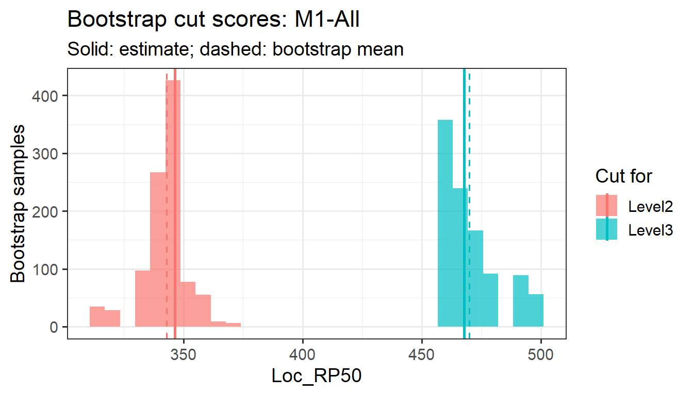

set.seed(7)
sim <- genFakeDataSet(ngca = 3, ntable = 2, npanelist = 4, cor_val = 0.7, nlevel = 3,
sdinp = 1, ecinp = 0, n = 40, 300, 500,
domains = c("Number", "Algebra", "Geometry"))
res <- emstans(data = sim, location = "Loc_RP50")
extract(res, "cutscore")
#> $`M1-All`
#> Level2 Level3
#> 346.3 467.7
#>
#> $`M2-All`
#> Level2 Level3
#> 366.6 469.6
#>
#> $`M3-All`
#> Level2 Level3
#> 406.8 503.3Bootstrapping cut scores
An ESS cut score depends on which items happen to be on the test. A different set of items measuring the same content, aligned by the same panel, would give somewhat different cuts. bootstrapping() estimates that variability by resampling the items. The notation follows How embedded standard setting works.
1 The study
The simulated study from Getting started:
2 The item bootstrap
A unit’s modal result is a function of its \(n\) items, each an (item location, modal aligned level) pair:
\[ \hat c_k = T_k\big( (b_1, a_1), \dots, (b_n, a_n) \big), \qquad k = 2, \dots, K, \]
where \(T_k\) is the ESS rule: the minimum of the ESS-Weight or ESS-Count profile with its tie-breaks. The bootstrap (Efron & Tibshirani, 1993) treats the items as a sample from the population of items that could have been written for the test, and approximates the sampling distribution of \(\hat c_k\) by applying the same rule to samples drawn from the items themselves:
- Draw \(n\) items with replacement, keeping each item’s location and modal level together: \((b^*_i, a^*_i)\), \(i = 1, \dots, n\).
- Order the sampled items by location and estimate the cuts, \(\hat c^{*}_{kb} = T_k\big((b^*_1, a^*_1), \dots, (b^*_n, a^*_n)\big)\), with the same criterion as the original fit.
- Repeat for \(b = 1, \dots, B\).
An item drawn \(m\) times counts \(m\) times in the profiles, like \(m\) items at the same location with the same alignment. bootstrapping() reports, for each cut level,
\[ \bar c^{*}_k = \frac1B \sum_b \hat c^{*}_{kb}, \qquad \widehat{\mathrm{SE}}_k = \sqrt{\frac{1}{B-1} \sum_b \big(\hat c^{*}_{kb} - \bar c^{*}_k\big)^2}, \]
the median, minimum and maximum, and the 2.5% and 97.5% percentiles, which form a 95% percentile interval. \(\bar c^{*}_k - \hat c_k\) estimates the bias of the cut.
The bootstrap takes the modal alignments, the item locations and the SD as fixed. It captures the variability due to the choice of items, not the variability among panelists (see Variability across panelists), and not the estimation error in the item locations.
3 Running it
bootstrapping() works on one unit at a time. seed makes the draws reproducible.
boot <- bootstrapping(res, unit = "M1-All", n = 1000, seed = 1)
boot
#> Bootstrap of modal cut scores for M1-All (1000 samples, item locations, exact minimum)
#> cut_level n mean sd median min max q2.5 q97.5 estimate
#> Level2 1000 342.9 9.664 346.3 313.9 372.4 316.9 359.0 346.3
#> Level3 1000 469.9 12.448 467.7 458.4 497.8 458.4 497.1 467.7extract() returns the draws, the summary and a plot. report() builds an HTML report of them.
draws <- extract(boot, "draws")
head(draws)
#> rep cut_level cut_score inconsistency
#> 1 1 Level2 359.0 42.1
#> 2 1 Level3 469.4 84.8
#> 3 2 Level2 352.7 12.6
#> 4 2 Level3 458.4 36.0
#> 5 3 Level2 348.7 45.1
#> 6 3 Level3 481.2 40.9
extract(boot, "plot")
report(boot)4 Reading the results
The draws are discrete. With grid = "items", every bootstrap cut is an item location, so the histogram has gaps and the percentile interval runs from one item location to another. The SE is a better single summary than the interval width when there are few items.
Where the cut lies matters. The ESS-Weight cut for level \(k\) is the location of item \(n_{<k}\) or \(n_{<k} + 1\) in booklet order (see ESS-Weight is a quantile of the item locations). In a bootstrap sample, the number of items aligned below level \(k\) varies around \(n_{<k}\), so the bootstrap cut behaves like a sample quantile of the item locations at proportion \(\pi_k = n_{<k}/n\). For a quantile, the large-sample standard error is approximately
\[ \mathrm{SE}_k \approx \frac{1}{g(c_k)} \sqrt{\frac{\pi_k (1 - \pi_k)}{n}}, \]
where \(g\) is the density of the item locations near the cut. A cut in a region of the scale with few items is uncertain, and adding items near a cut makes it more precise.
Cuts near the end of the item range are skewed. A cut can only fall on an item location, so its bootstrap distribution is bounded by the easiest and hardest items. A cut near either end has a lopsided distribution, and its bootstrap mean is pulled away from the estimate, toward the middle of the item range.
ESS-Count often varies more. Its profile is a walk with possibly several separated minima, so small changes in the items can move the cut from one minimum to another:
res_c <- emstans(data = sim, location = "Loc_RP50", method = "count")
boot_c <- bootstrapping(res_c, unit = "M1-All", n = 1000, seed = 1)
rbind(weight = extract(boot, "summary")$sd, count = extract(boot_c, "summary")$sd)
#> [,1] [,2]
#> weight 9.664 12.45
#> count 10.821 13.595 The jittered-grid bootstrap
Earlier versions of EmStanS used a different estimator in each bootstrap sample. It remains available with grid = "jittered":
- Resample the items as above.
- Build a grid of candidate cuts from the lowest to the highest sampled location with step \(s\) (\(s = 0.1\) when the location range is under 10, otherwise \(s = 1\)). Move each grid point by a uniform random amount: \(g_t = b^*_{(1)} + (t - 1)s - U_t\), \(U_t \sim \mathrm{Uniform}(-s, s)\). One grid is shared by all cut levels.
- Evaluate the profile (\(W_k\) or \(C_k\)) at every grid point, fit a Gaussian GAM to it (
mgcv::gam(y ~ s(g, k = 10)), fewer basis functions for short grids; Wood, 2017), and take the minimum of the fitted curve over \(n\) equally spaced points.
boot_j <- bootstrapping(res, unit = "M1-All", n = 200, seed = 1, grid = "jittered")
boot_j
#> Bootstrap of modal cut scores for M1-All (200 samples, jittered grid, smoothed minimum)
#> cut_level n mean sd median min max q2.5 q97.5 estimate
#> Level2 200 340.6 8.107 341.9 312.9 358.2 322 352.3 346.3
#> Level3 200 472.6 13.060 469.0 443.5 499.6 453 499.2 467.7The jittered grid estimates a smoothed minimum that need not be an item location, so its draws are not discrete. But it is a different estimator from the one emstans() uses: its draws describe a smoothed cut, not the reported one, and their centre can differ from the reported cut. Use the default grid = "items" to describe the uncertainty of the cut scores emss reports. Use "jittered" to reproduce earlier EmStanS results.
If the original fit used smooth = TRUE, the default bootstrap also uses the smoothed minimum in every sample, so it matches the original estimator.
6 Variability across panelists
The bootstrap above holds the panel fixed. A complementary summary of how much the cut depends on the panelists is the spread of the panelists’ own cuts. If the \(J\) panelists are treated as a random sample of qualified panelists, the standard error of the average panelist cut is
\[ \mathrm{SE}(\bar c_k) = \frac{s_k}{\sqrt{J}}, \]
where \(s_k\) is the SD of the panelist cuts:
pan <- extract(res, "individual")$panelist
pan <- pan[pan$unit == "M1-All", ]
aggregate(cut_score ~ cut_level, pan, function(x) c(mean = mean(x), sd = sd(x),
se = sd(x) / sqrt(length(x))))
#> cut_level cut_score.mean cut_score.sd cut_score.se
#> 1 Level2 347.587 13.289 4.698
#> 2 Level3 455.900 31.191 11.028Panelists who discussed their alignments at the same table are not independent, so this standard error is optimistic when tables differ. With enough tables, the SD of the table-level cuts divided by the square root of the number of tables is a more conservative alternative.
7 References
Efron, B., & Tibshirani, R. J. (1993). An introduction to the bootstrap. Chapman and Hall/CRC.
Wood, S. N. (2017). Generalized additive models: An introduction with R (2nd ed.). Chapman and Hall/CRC.